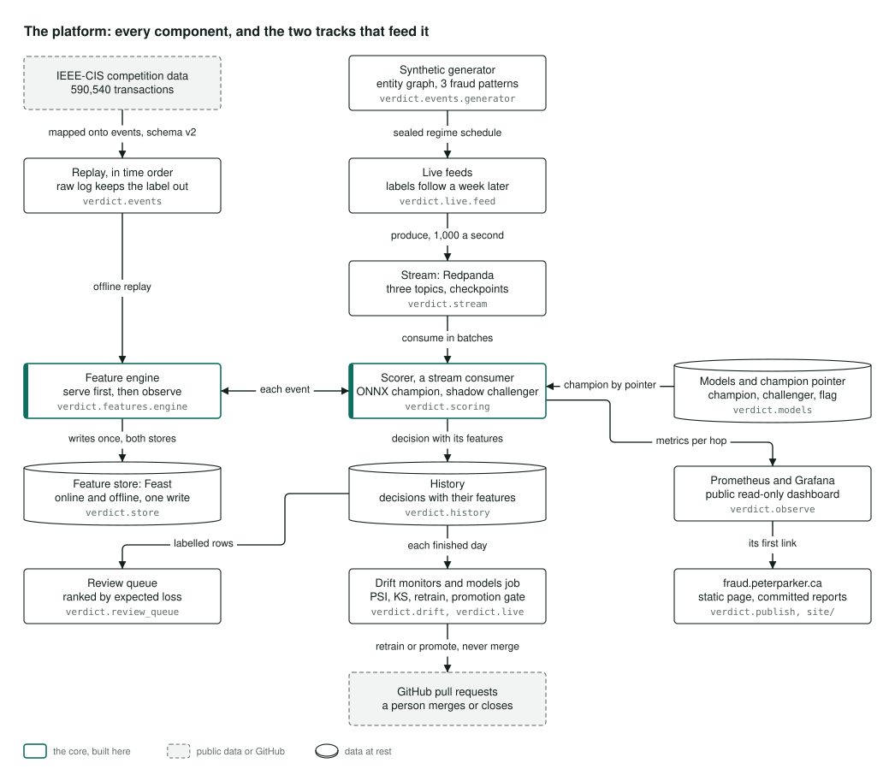
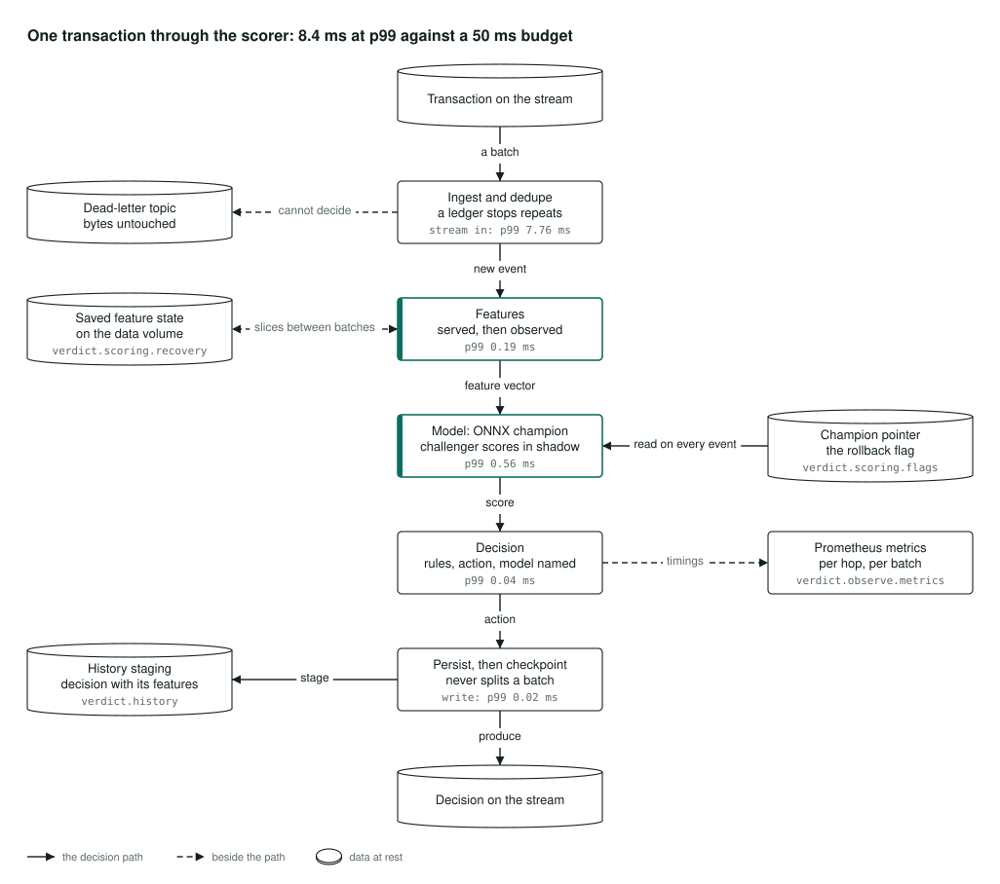
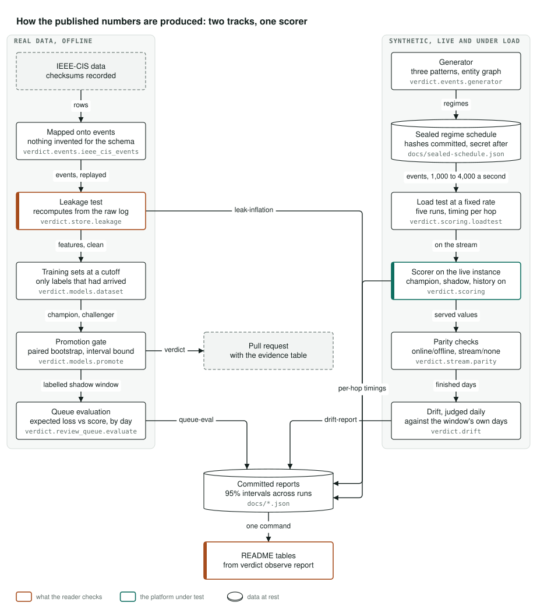
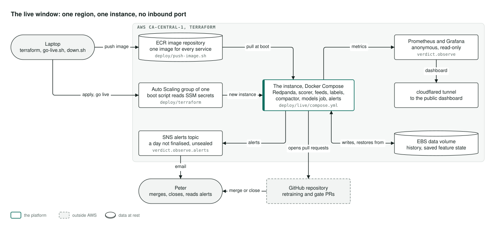

Architecture
How it's built
How the real-time fraud decisioning platform behind this page is built and measured, in four pictures. Select a diagram to open it full size.
The platform

Two sources of transactions feed one platform.
On the left is real data, replayed. A public fraud competition dataset is converted into the platform's own event format and replayed in time order. Each transaction is given its features before the platform learns anything from it, and every feature value is computed once and written to both the fast store used while scoring and the history store used for training.
In the middle is live traffic, made up. A generator plays a schedule of changing fraud patterns, sealed in advance so nobody can tune to it. Transactions arrive now and their fraud labels a week later, the way they do in a real bank, all through a message stream.
The scorer reads the stream in batches. The current model, the champion, makes the decisions, and a challenger scores the same transactions quietly beside it. Every decision is kept with the features it was made on. From that history, the analysts' review queue is ranked by expected loss, and each finished day is checked for drift. Drift checks and a models job can open retraining and promotion pull requests, but never merge them. A person does.
The scorer's timings go to a public monitoring dashboard, which is the first link on this site.
Where it lives: verdict.events, verdict.features.engine, verdict.store, verdict.live.feed, verdict.stream, verdict.scoring, verdict.models, verdict.history, verdict.review_queue, verdict.drift, verdict.observe and verdict.publish.
One transaction through the scorer

The decision path runs from top to bottom.
A batch is read from the stream, and a ledger drops any transaction already seen. The feature engine gives the transaction its features before it learns from it. The champion model scores it while the challenger scores it in the background, and simple rules turn the score into an action that names the model responsible. The decision is saved, written back to the stream, and only then is the batch marked done, so stopping the scorer can never leave half a batch decided.
The times under each step are the slowest 1 percent from the published load test on the live machine at a thousand transactions a second. End to end that comes to 8.4 milliseconds, against a 50 millisecond budget.
Beside the path, a record the scorer cannot read goes to a separate queue with its bytes untouched. The feature state is saved a slice at a time between batches, so a replacement machine restores it rather than rebuilding it. The pointer to the champion is read on every transaction, which is what makes a rollback take effect on the very next one. And the timing of every step is exported for monitoring.
Where it lives: verdict.scoring, verdict.scoring.recovery, verdict.scoring.flags and verdict.observe.metrics.
How the published numbers are produced

Every number in the README comes from one of two tracks, and each table says which.
The real-data track, on the left, runs offline. The competition data becomes events with nothing invented to fill gaps. A leakage test recomputes every feature from the raw log and fails on any value a transaction could not have known at the time. Training sets are cut at a date and hold only the fraud labels that had arrived by then. The promotion gate compares champion and challenger on the same transactions and writes its verdict into a pull request. The queue evaluation compares ranking by expected loss with ranking by score, one day at a time.
The synthetic track, on the right, runs live and under load. The generator's schedule is sealed by published fingerprints, and the secret is revealed after the window closes. The load test sends transactions at fixed rates and times every step over five runs. Checks hold the fast store to the history store, and the streaming results to a run without the stream. Drift is judged each day against the window's own first days.
Both tracks end in committed reports with 95% intervals, and one command writes the README's tables from them.
Where it lives: verdict.store.leakage, verdict.models.dataset, verdict.models.promote, verdict.review_queue.evaluate, verdict.scoring.loadtest, verdict.stream.parity and verdict.drift.
The live window

The live stack is one machine in one AWS region in Canada, with no inbound port open.
From a laptop, one script pushes a single container image and Terraform stands up a group that always keeps exactly one machine running. When that machine boots, it reads its secrets from AWS's parameter store and pulls the image. Everything runs on it under Docker Compose: the message stream, the scorer, the two traffic feeds, and the jobs that handle labels, storage, models and alerts.
The decision history and the scorer's saved state live on a disk that survives a replacement machine. The public dashboard leaves through a Cloudflare tunnel, which is the only way out. Alerts, such as a day that did not finish or a history that was not sealed, are emailed through AWS. The models job opens retraining and promotion pull requests on GitHub, and a person merges or closes them. A teardown script removes the stack and checks with the cloud itself, not with Terraform's records, what is left.
Where it lives: deploy/push-image.sh, deploy/terraform, deploy/go-live.sh, deploy/live/compose.yml and deploy/down.sh.